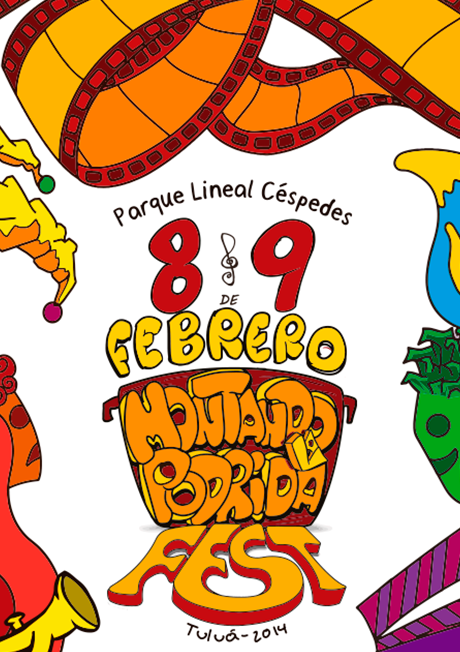
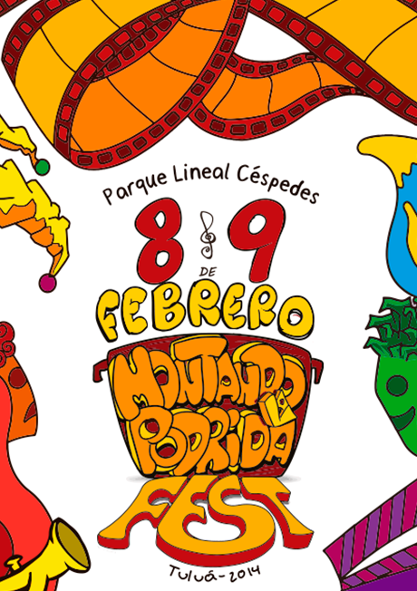
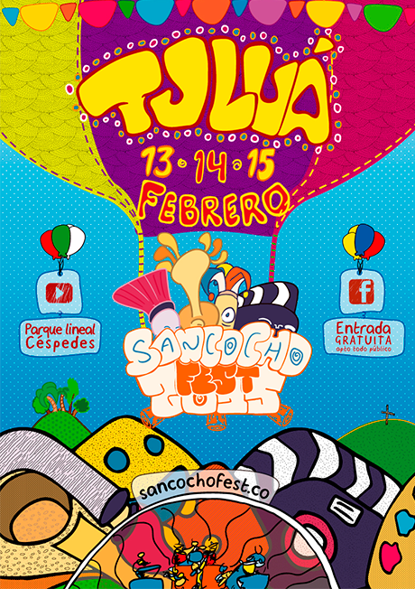
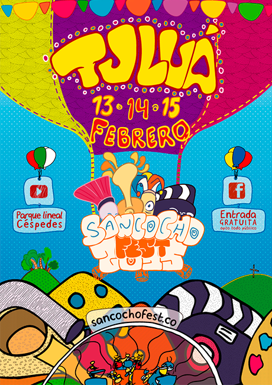

MEMORIAS
En su primera versión el Montando La Podrida Fest se caracterizó por fomentar el arte como herramienta educativa para la reconstrucción del tejido social a través de un festival en el que se promueven espacios gratuitos de aprendizaje, intercambio cultural y esparcimiento en diferentes disciplinas artísticas, mientras se aporta a la consolidación de una identidad cultural propia del municipio de Tuluá y al fortalecimiento de su proyección como foco turístico regional.


En el segundo Montando La Podrida Fest, el festival amplió su visión para dar participación a diferentes disciplinas artísticas, con exposiciones, presentaciones, y talleres gratuitos para toda la comunidad; es así como se abrieron espacios para: 16 agrupaciones musicales, 5 performances, 2 obras de teatro, 5 talleres artísticos, 1 grupo de danza, 2 conversatorios, 2 clínicas, 2 proyecciones de cine, 1 exposición fotográfica, 8 stands artesanales y 1 muestra gastronómica por parte del mercado campesinos
 

Se amplio el concepto del festival para convertirlo en un espacio de convivencia y esparcimiento que pueda incluir todo tipo de público; por tal motivo, el evento adquiere el nombre de “Sancocho Fest” con el que se pretende abarcar el propósito de dar a conocer en un mismo evento, múltiples propuestas artísticas y estéticas que susciten el crecimiento cultural de la región mientras promueven la inclusión social.
 
